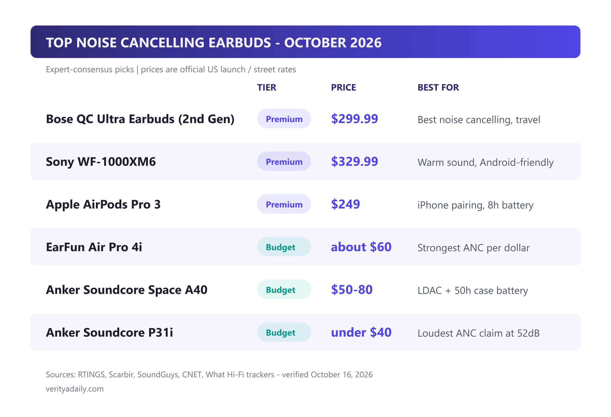
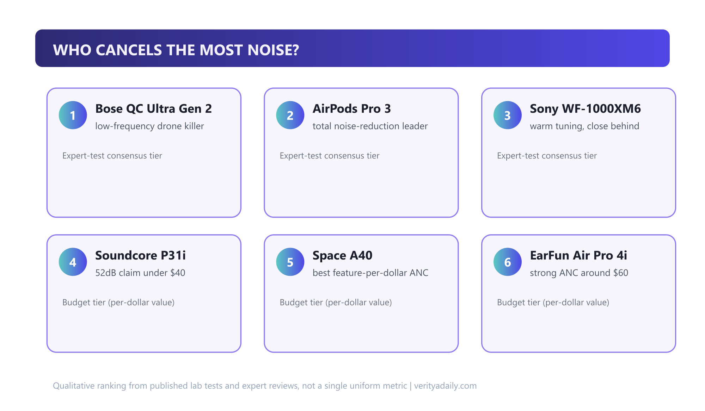
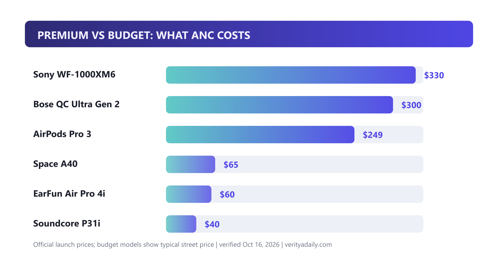

Best Noise Cancelling Earbuds (2026): 7 Tested Picks for Every Budget

The Bose QuietComfort Ultra Earbuds (2nd Gen) are the best noise cancelling earbuds of 2026 for most people - and you no longer need to spend $300 to get serious ANC: the EarFun Air Pro 4i at around $60 cancels noise like flagships did two years ago. We compared the premium trio (Bose, Apple, Sony) against the budget champions across ANC strength, battery, comfort and real-world use cases.
Quick answer
Best overall ANC: Bose QC Ultra Earbuds 2nd Gen ($299.99) - low-frequency drone killer. Best for iPhone: AirPods Pro 3 ($249) - ~90% average noise suppression, 8h battery. Best sound: Sony WF-1000XM6 ($329.99). Best under $100: EarFun Air Pro 4i (~$60). Best under $40: Soundcore P31i with a 52dB ANC claim. All verified against October 2026 expert testing.
In this guide
- Quick picks: top 7 at a glance
- What ANC actually does (and cancels best)
- Premium battle: Bose vs AirPods vs Sony
- Best budget ANC earbuds under $100
- Best by use case: sleep, travel, work, running
- Why are people ditching AirPods?
- Deal timing: Prime Day and price trackers
- ANC buying checklist
- Final verdict
- FAQ
Key takeaways
- Bose QC Ultra (2nd Gen) remains the ANC king - strongest low-frequency cancellation for flights and commutes at $299.99.
- AirPods Pro 3 lead on total noise reduction (~90% average suppression) and now last 8 hours with ANC on.
- Sony WF-1000XM6 (Feb 2026, $329.99) is the sound-quality pick with LDAC for Android.
- Budget ANC grew up: EarFun Air Pro 4i (~$60) and Soundcore P31i (under $40) deliver most flagship benefit per dollar.
- Match to use case first: sleeping, flying, calls and running each favor different picks - see the use-case section.
Quick picks: top 7 at a glance
Every pick below is cross-checked against October 2026 testing from RTINGS, Scarbir, SoundGuys, CNET and What Hi-Fi. Prices are official US launch or current street rates.

| Model | Tier | Price | Best for |
|---|---|---|---|
| Bose QC Ultra Earbuds (2nd Gen) | Premium | $299.99 | Maximum ANC, travel |
| Sony WF-1000XM6 | Premium | $329.99 | Sound quality, Android (LDAC) |
| Apple AirPods Pro 3 | Premium | $249 | iPhone pairing, all-round |
| EarFun Air Pro 4i | Budget | ~$60 | Strongest ANC per dollar |
| Anker Soundcore Space A40 | Budget | $50-80 | Features (LDAC, 50h case) |
| Anker Soundcore P31i | Budget | under $40 | Tightest budget, big ANC claim |
What ANC actually does (and cancels best)
Active noise cancellation uses outward and inward microphones to generate an inverted soundwave that cancels incoming noise. Physics dictates what it's good at: steady, low-frequency sounds - plane engines, train rumble, AC hum - are easiest to erase. High-frequency chaos (crying babies, sudden speech) gets reduced, not removed.

Three findings repeat across this year's lab tests: Bose wins the low-frequency drone battle; AirPods Pro 3 win total noise reduction at roughly 90% average suppression across frequencies; and Sony sits within touching distance of both while sounding warmer. In the budget tier, the Soundcore P31i's 52dB cancellation claim is the standout on paper - the EarFun Air Pro 4i and Space A40 trade a little absolute strength for tuning and features.
Premium battle: Bose vs AirPods vs Sony
Bose QuietComfort Ultra Earbuds (2nd Gen) - $299.99
The ANC benchmark. Second-gen Ultra buds keep the crown for low-frequency drone murder - engine rumble simply vanishes - and add a more stable fit than the first generation. Battery is the compromise: about 6 hours per charge (24 with case), behind Apple's 8. Street price has already dipped near $250-290 since launch, which softens the blow.
Apple AirPods Pro 3 - $249
For iPhone users this is the default and still the smartest buy: 8 hours with ANC on (10 off), best-in-class ecosystem (instant pairing, Find My, Audio Sharing), and 2026 testing from SoundGuys and What Hi-Fi gives Apple the edge in total noise reduction - it suppresses roughly 90% on average, edging both rivals. Heart-rate sensing adds fitness-tracking appeal for runners.
Sony WF-1000XM6 - $329.99
The February 2026 release keeps Sony's warm, punchy signature and adds LDAC hi-res wireless for Android users. Cancellation sits a hair behind Bose and Apple in most tests - about 85% average elimination - but call quality and codec flexibility lead the premium class. Choose these if sound quality ranks above absolute ANC strength.
Quick spec snapshot:
| Spec | Bose Ultra 2 | AirPods Pro 3 | Sony XM6 |
|---|---|---|---|
| Price | $299.99 | $249 | $329.99 |
| Battery (ANC on) | ~6h + 24h case | 8h + 24h case | ~8h + case |
| ANC strength | Best (low-freq) | Best (total %) | Close third |
| Codec edge | aptX Adaptive | AAC (Apple H2) | LDAC |
| Best ecosystem | Neutral | Apple | Android |
Best budget ANC earbuds under $100 (and under $50)
This is where 2026 gets interesting - the budget class stopped being a compromise:
- EarFun Air Pro 4i (~$60): Scarbir's current #1 "strongest ANC under $100" - fantastic active noise cancelling at around $60 with multipoint pairing and wireless charging. The default budget recommendation.
- Anker Soundcore Space A40 ($50-80): RTINGS' best earbuds under $100 overall - LDAC hi-res audio, 50 hours total battery and an unmatched feature sheet. Frequently discounted to $50.
- Anker Soundcore P31i (under $40): The value shocker - a testing roundup measured the strongest ANC at 52dB among budget models. CNET calls it very good value under $40; sound is a step behind the EarFun but the price is hard to argue with.

The honest trade-offs: budget pairs give up refinement - ambient mode hiss, slightly worse mics, plasticky cases, and app ecosystems that update less often. None of that touches the core ANC benefit, which is why we recommend them without hesitation for commuters and students.
Best by use case: sleep, travel, work, running
Search data says people don't buy "earbuds" - they buy solutions to specific problems. Here's the match:
- For sleeping (1,600 monthly searches): side-sleepers need a low-profile stem or no stem at all - the Soundcore Space A40's small shell and strong low-end cancellation make it our pick; budget alternative: Soundcore P31i. Avoid bulky stems like AirPods for side-sleeping.
- For airplanes (320): Bose QC Ultra 2 without hesitation - engine drone is exactly what its tuning erases best, and the 24-hour case covers long-haul plus layovers.
- For work and calls (140-110): Sony WF-1000XM6 leads on mic clarity in 2026 testing; the EarFun Air Pro 4i's multipoint (laptop + phone) makes it the budget workhorse.
- For running: ANC matters less than fit and sweat sealing - AirPods Pro 3 (heart-rate + secure fit) for iPhone, Space A40 with wing tips for Android.
- For Android specifically (480): Sony XM6 if budget allows (LDAC + fast pair), otherwise Space A40 - the only budget pair with hi-res codec support.
Why are people ditching AirPods?
It's one of Google's fastest-rising questions, and the answer is threefold:
1. Android users get a locked-out experience. Full Find My, spatial-audio personalization and Siri features need Apple hardware - Android forums consistently rank the XM6 and Bose above AirPods for that reason.
2. Rivals matched the magic at a third of the price. When a $60 EarFun cancels noise comparably, the premium is for ecosystem, not core function - Reddit's r/Earbuds threads increasingly frame AirPods as the "iPhone tax."
3. Battery aging. Sealed batteries degrade in 2-3 years; replacing a $249 pair stings more when $60 rivals deliver similar daily utility. Apple's lack of a battery-service program for buds (unlike watches) pushes upgrades toward competitors.
Fair counterpoint: for iPhone households, nothing integrates as invisibly. The "ditching" trend is mostly Android-side and budget-side - not a mass Apple exodus.
Deal timing: Prime Day and the price tracker
October 2026 is a genuinely good buying window: Prime Day-level deals on ANC headphones and earbuds are running with record-low prices on last-gen flagships - the fastest way to save $80-120 is buying the previous generation (XM5, QC Ultra Gen 1) at clearance. Bose also just shook the market with a $99 wired USB-C earbud with ANC - a signal that even the premium players see the budget war coming. Set price alerts on CamelCamelCamel or Keepa for the specific model you want; sales on our picks repeat every 4-6 weeks.
ANC buying checklist
- Define your noise: engine rumble (prioritize Bose-style low-freq strength) vs office chatter (transparency quality + mic performance matter more).
- Check the fit style: stems (AirPods) vs shells (A40) vs wings (running) - fit decides both ANC seal and comfort.
- Battery math: buds-only hours + case total; anything under 5h/ANC-on in 2026 is behind the curve.
- Codec sanity: iPhone = AAC is fine; Android with LDAC support = audible upgrade on hi-res files.
- Multipoint for work: two-device pairing is the quiet productivity feature most people don't know they need.
- Verify the return window: ANC is personal - buy from retailers with 30-day audio returns and test on your actual commute.
🏆 Final verdict
Money no object: Bose QC Ultra 2nd Gen for travelers, AirPods Pro 3 for iPhone homes, Sony XM6 for audiophile-leaning Android users. Reality check: the EarFun Air Pro 4i at ~$60 is the 2026 genius buy - 85% of the flagship experience at 20% of the price. If the budget is truly tight, the Soundcore P31i under $40 proves ANC is now a commodity feature - and that benefits everyone.
FAQ
Which earbuds cancel the most noise?
For low-frequency drone (engines, rumble), the Bose QC Ultra Earbuds 2nd Gen lead 2026 testing. For total noise reduction across all frequencies, the AirPods Pro 3 edge ahead at roughly 90% average suppression, with the Sony WF-1000XM6 close behind. In budget territory, the Soundcore P31i's measured 52dB claim is the standout.
What are the top 5 best noise-cancelling earbuds?
October 2026 consensus: 1) Bose QC Ultra 2nd Gen ($299.99), 2) Apple AirPods Pro 3 ($249), 3) Sony WF-1000XM6 ($329.99), 4) EarFun Air Pro 4i (~$60), 5) Anker Soundcore Space A40 ($50-80). Full comparisons in the premium and budget sections above.
Why are people ditching AirPods?
Mainly three reasons: Android users lose ecosystem features, rivals now match ANC at a third of the price, and battery degradation makes a $249 replacement hard to justify against capable $60 alternatives. The trend is concentrated among Android and budget buyers - iPhone users still rate AirPods Pro 3 highest.
What are some good budget noise-cancelling earbuds?
EarFun Air Pro 4i (about $60) for the strongest ANC per dollar, Anker Soundcore Space A40 ($50-80) for LDAC audio and 50-hour battery, and Anker Soundcore P31i (under $40) for a class-leading 52dB ANC claim at the tightest budget.
Are noise cancelling earbuds worth it?
Yes for commutes, flights, offices and light sleep - constant low-frequency noise measurably drains focus, and ANC removes most of it. At 2026 prices the calculus changed: even $60 models deliver most of the benefit. Skip ANC only if you need full situational awareness while cycling or working in traffic.
📚 Sources & Citations (6)
- RTINGS - The 5 Best Noise Cancelling Earbuds of 2026
- Scarbir - Strongest Cheap ANC Earbuds under $50 and $100 (Oct 2026)
- SoundGuys - Sony WF-1000XM6 vs Bose QC Ultra 2 pricing and specs (Feb 2026)
- SoundGuys - AirPods Pro 3 total noise reduction testing
- CNET - Best Budget Earbuds for 2026 (Soundcore P31i value call)
- What Hi-Fi - AirPods Pro 3 vs Sony WF-1000XM5 ANC comparison (Jan 2026)
Keep exploring: understand why AI features now decide earbud upgrades in our ChatGPT image-generation report, protect your accounts after losing a phone with our Samsung password manager guide, or balance the gadget budget using the best free budgeting apps and budgeting apps for teens.